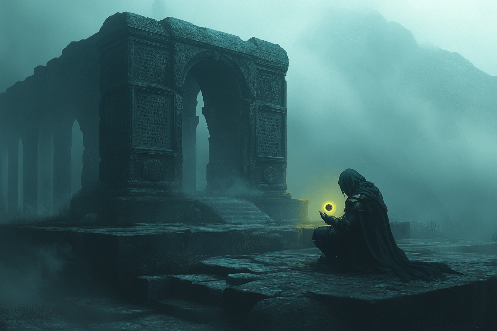
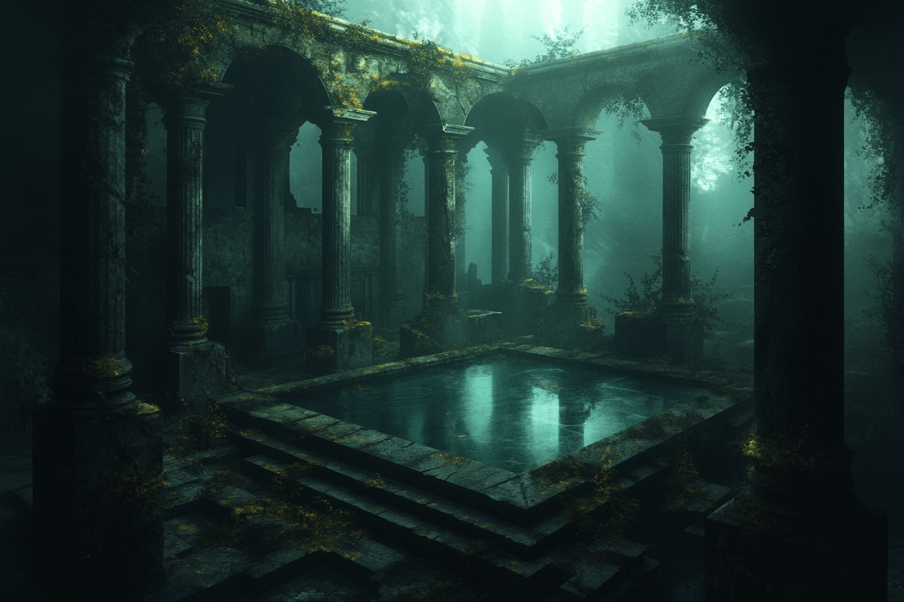
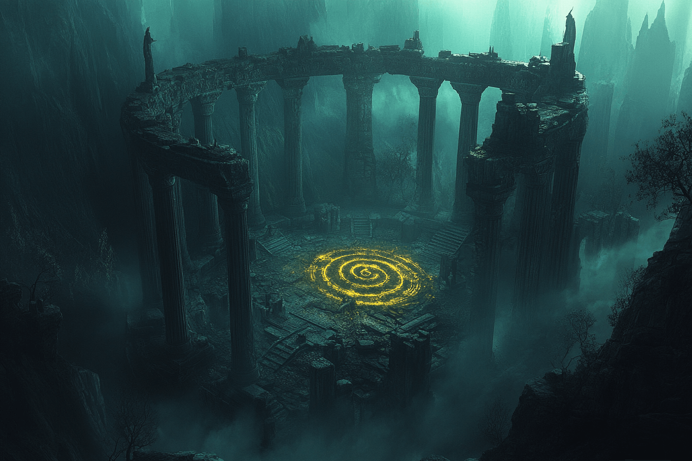
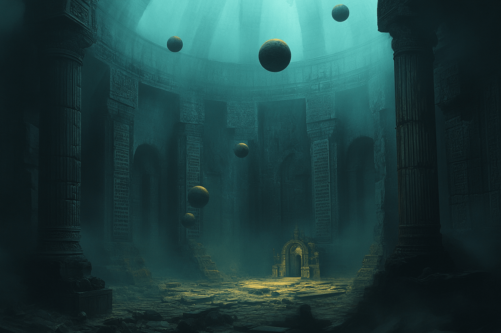

Nadie sabe cómo llegó allí. A veces aparece al final de un túnel sin salida en una ciudad desconocida. Otras, al fondo de una escalera en espiral que nadie recuerda haber construido. Esta vez, apareció entre dos latidos de su corazón. Cuando Mara parpadeó, ya
estaba dentro. El aire olía a incienso viejo y a tierra húmeda. El silencio tenía peso. Y en lo alto, las cúpulas se perdían entre columnas que se disolvían en sombra.
No recordaba su nombre. Ni por qué estaba llorando.
Avanzó descalza sobre losas cubiertas de musgo. Cada paso resonaba como si alguien caminara a su lado. En los muros había inscripciones borrosas, algunas talladas con furia, otras con una ternura que dolía. Reconocía palabras que ya no sabía pronunciar.
En el centro del templo, una fuente sin agua latía con una luz suave. Dentro, flotaban pequeños objetos: una bufanda infantil, una carta sin destinatario, una fotografía quemada por la mitad. Cuando se inclinó a mirar más de cerca, sintió que algo le abandonaba. No
supo el qué. Solo supo que algo ya no estaba.
Retrocedió con torpeza. No sabía cuánto tiempo llevaba allí. Al tocar la puerta de salida, comprendió que podía marcharse… pero no sería la misma. Ninguno lo era. La puerta se abrió sola.
Y despertó en su cama. O eso pensó. El marco de una foto junto a su almohada estaba vacío. Había lágrimas en su rostro. Y un nombre en una lengua que no lograba recordar.
Informe de Estado
- Accesibilidad: Se manifiesta como estructura física en lugares olvidados por el tiempo. No puede localizarse dos veces en el mismo sitio.
- Recomendación de la Sociedad: Ingresar solo en caso de necesidad extrema. Es imposible prever qué recuerdo será entregado a cambio.
- Estado del archivo: Altamente inestable. Algunos agentes no han regresado. Otros lo hicieron... pero sin recordar su misión, ni sus nombres.
Informe clasificado — X-021D. Registrado el 24 de febrero de 2025.
Registro Visual
Algunas imágenes han sido rescatadas de antiguos dispositivos, otras fueron dibujadas de
memoria por quienes lograron regresar. Todas ellas capturan instantes que el tiempo quiso enterrar.




Fragmentos Recuperados
Algunos recuerdos se resisten al vacío. Estas frases, rescatadas de la bruma mental de antiguos visitantes, son todo lo que quedó tras cruzar las puertas. Sus nombres se han borrado. Sus voces, también. Pero sus palabras persisten... un instante más.
“Algo me falta. Lo noto cuando intento recordar por qué lloré al salir.”
— Exploradora 7-Λ, diario fragmentado
“Me despedí de alguien… pero no sé de quién. Solo recuerdo que era importante.”
— Anónimo, nota manuscrita en un abrigo olvidado
“Dentro no sentí miedo. Solo una paz que no sabía que necesitaba.”
— Visitante Recursivo, grabación parcial
“En la entrada encontré mi nombre escrito en la piedra. En la salida, ya no sabía cómo me llamaba.”
— Testigo G-22, informe de campo
“No recuerdo como entré ni como salí, pero nunca olvidaré como me hizo sentir estar dentro de ese templo”
— Explorador 167, informe de campo
“Algo me falta. Lo noto cuando intento recordar por qué lloré al salir.”